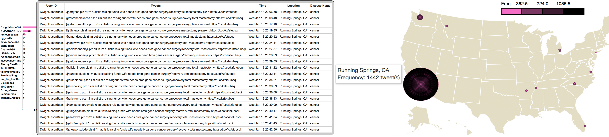
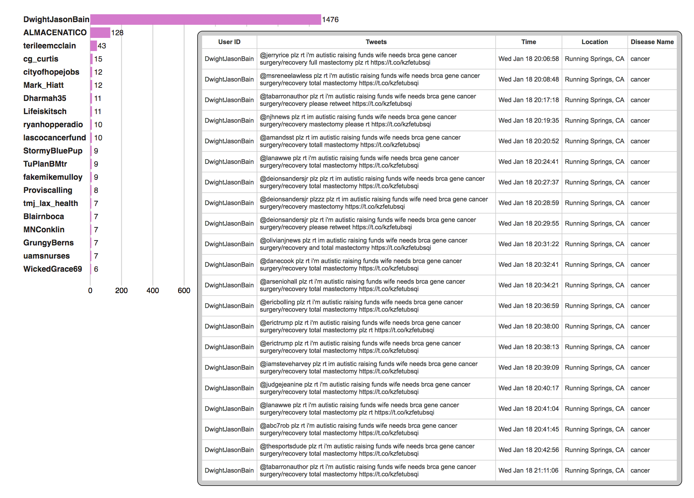
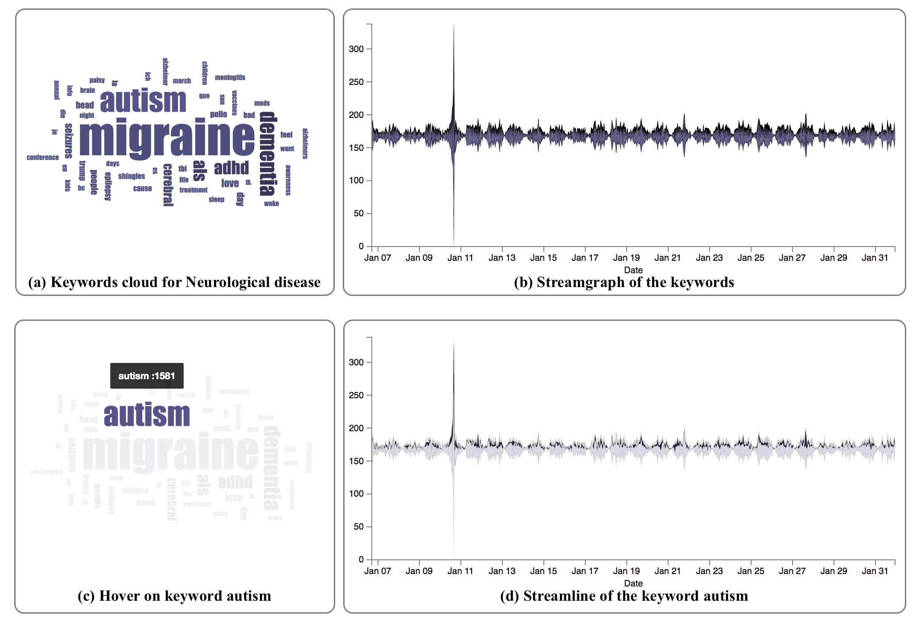

HealthTvizer: Exploring Health Awareness in Twitter Data throughCoordinated Multiple Views
Big Social Media Data Management and Analysis, Online Submission ID #S16208
After completing the development of HealthTvizer, we examine the application and explore some valuable and interesting user stories.
Use case on "Cancer"
When we click on the "cancer" from the diseases, cloud our application automatically update the top user list and disease map. On the map, we notice a big circle in California as depicted in the following figure.

On user list, we found that the user DwightJasonBain has more than a thousand tweets and we further examine what he is saying by clicking on the userID, and our application displays the tweets as the following figure. It reveals that the person was trying to raise fund for the treatment of his wife using "gofundme." The fundraising tweets drew the attention of the tweeter users and became spread a lot in California region. Hence we can observe a big black circle on the map.

Use case on "Autism"

In the above figure, (a) shows the keywords cloud for the Neurological diseases. When we observe the keywords, "autism" drew our attention, and we further examine that. If we hover on the keyword "autism" as the box (c) in the figure, we can notice a sudden hike in the streamgraph for the keyword "autism" on January 10, 2017. We further investigate it using the top user list and map. We discovered that there was something in San Marcos, CA.
When we examine the user's tweets from the user list, we found that the user "AutismSocietySD" share lots of tweets about the "7th annual swimming with autism conference" on that day. Due to that reason, there was a high frequency of the keyword "autism" on January 10, 2017.